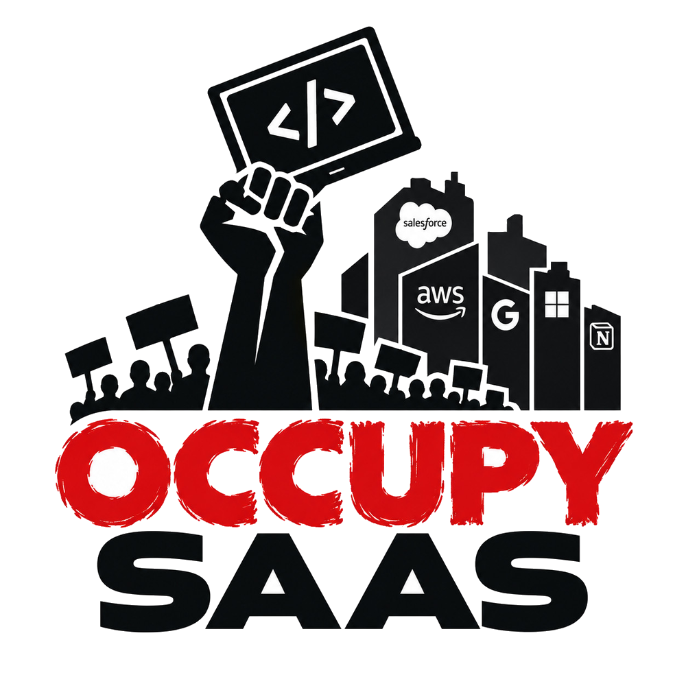

Per-seat pricing is a tax on growth
Every hire, every intern, every contractor — another line item. Infrastructure shouldn't charge rent by the head.
OccupySaaS is a protest movement written in code. Laid-off engineers, armed with AI and public documentation, are building clean-room, open-source, drop-in replacements for the platforms that rent our own industry back to us — one seat at a time.

In 2011, Occupy Wall Street asked who the economy was really working for. In 2026 we're asking the same question about the cloud. The tools every company runs on are now toll booths — and the people who built them were shown the door.
Every hire, every intern, every contractor — another line item. Infrastructure shouldn't charge rent by the head.
Proprietary APIs, export walls and surprise price hikes keep customers captive. Compatible open alternatives set them free.
A million engineers were let go while the platforms kept growing. We still know how to ship. Now we ship it in the open.
We don't leak, decompile or copy anyone's code. Every project is rebuilt from public documentation and open standards, with AI doing the heavy lifting on the build side of a strict firewall — then proven compatible against the vendors' own public SDKs.
Public API references, open standards (OAuth 2.0, OIDC, REST) and published SDK behaviour become a written specification. Nothing confidential, nothing leaked, nothing from former employers.
Spec writers and builders stay separated. Each repo carries a CLEAN_ROOM.md policy, and provenance is recorded for every fixture and reference.
AI agents implement from the spec alone — contracts first (openapi.yaml), then code, then tests — under human review at every merge.
A compatibility laboratory runs the vendors' own public client SDKs against our server. If your existing code doesn't work unchanged, it isn't done.
Apache-2.0. Self-hostable. Pluggable storage. No telemetry you didn't ask for, and no seat counter.
Identity and CRM: the two subscriptions almost every company pays for and almost nobody loves. Both are early, both are public, and both welcome contributors today.
A self-hostable identity server that speaks the Auth0 Authentication API. Point an existing Auth0 SDK at a ZeroAuthy tenant domain and it works with no code changes.
client_credentials, rotating refresh tokens, revoke & logout# build & run $ go build -o bin/zeroauthy ./cmd/zeroauthy $ ./bin/zeroauthy serve --config config.yaml $ curl https://localhost:8443/.well-known/openid-configuration
A free, open-source Salesforce replacement with a tenant-isolated Go/PostgreSQL core, a Vue record editor, and a compatibility laboratory that checks behaviour against Salesforce's public API contract.
describe and limited queries# run the compatibility laboratory $ npm ci --prefix compat/clients/node --ignore-scripts $ npm --prefix compat/clients/node run check
Every category on this board is a monthly invoice somewhere. The movement picks the next target in public — bring a spec, a use case, or a grudge.
ZeroAuthy — Auth0-compatible login, tokens and tenants.
SalesCompel — Salesforce-compatible records and REST API.
Team knowledge bases that don't lock your writing behind a seat licence.
Tickets, sprints and boards with a compatible API for existing integrations.
SDK-compatible flag evaluation you can run next to your own services.
Logs, metrics and traces without per-gigabyte ransom notes.
Help desk, inbox and knowledge base, priced at zero agents.
Open an issue and make the case.
Proposed categories are open for discussion, not commitments. Names of existing products are used only to describe compatibility.
Occupy Wall Street began on 17 September 2011 in Zuccotti Park, New York City, with a simple frame: the 1% and the 99%. It had no leaders, made decisions in open assemblies, and spread to hundreds of cities.
OccupySaaS borrows that spirit and swaps tents for terminals. No marches, no property damage — just working software, published under an open licence, that anyone can run.
“We are the 99%.”
Protesters set up camp in Zuccotti Park in Manhattan's Financial District.
Occupy camps and general assemblies appear in cities around the world.
The camp ends; the language of the 1% and the 99% doesn't.
Wave after wave of cuts across the industry while subscription prices keep climbing.
The first clean-room rebuild opens its repo under Apache-2.0.
The second tower. More to come — decided in the open.
You don't need permission, a badge or a manager. You need a laptop and an afternoon.
Pick an open issue, follow the clean-room policy, open a pull request.
Run a release against your real SDKs and tell us exactly where it breaks.
Turn public docs into precise, testable specifications for the builders.
Star the repos, share the site, and tell your CFO what you're paying per seat.
Clean-room reimplementation is a long-established way to build compatible software: you work only from public information and independently write your own code. Interoperating with an API is not the same as copying a product. Each project publishes its clean-room policy and source provenance so anyone can check the work. This page isn't legal advice; if you're adopting a project for a business, talk to your own counsel.
No. OccupySaaS and its projects are independent and not affiliated with, endorsed by, or sponsored by any vendor named on this site. Product names are used only to describe compatibility.
Yes, but never with confidential knowledge from a former employer. Contributors work only from public
material, and anyone with relevant inside knowledge should stay on the public-spec side of the firewall
or sit that project out. When in doubt, read the project's CLEAN_ROOM.md and ask first.
Because the giants had thousands of engineers and we have a movement. AI agents let a small group turn a precise spec into working code quickly. Humans write the specs, review every change, and own the result, and compatibility tests against real SDKs decide what counts as done.
Not yet. Both first projects are early and say so plainly in their READMEs, along with exactly which features work today. Try them, break them, and file issues.
Nothing. Every project is released under the Apache License 2.0. Run it, fork it, sell services around it. The only thing we ask is that you contribute back what you can.